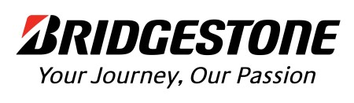
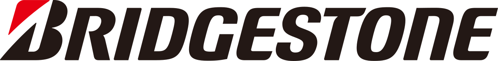
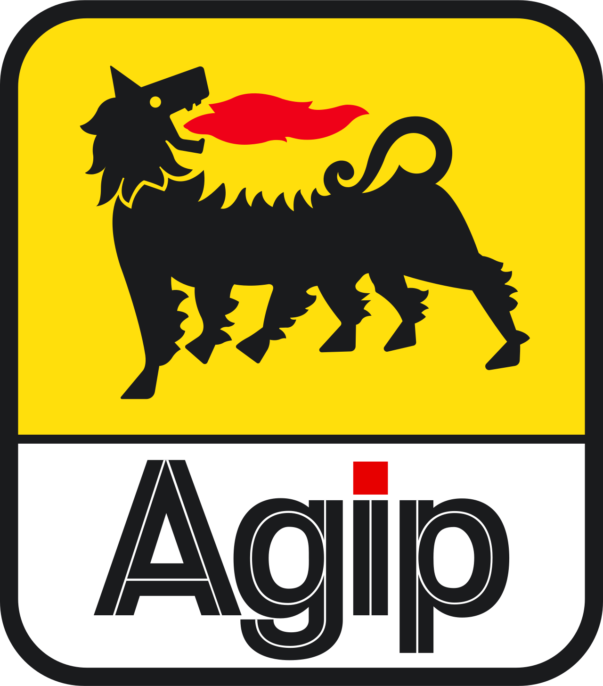

홈 > 브랜드 매거진 > 브리지스톤
브리지스톤
브리지스톤(Bridgestone)은 1931년 이시바시 쇼지로가 일본에서 창업한 타이어·고무 제품 제조기업으로, 사명은 창업자 성씨 '이시바시(돌다리)'를 영어로 옮긴 데서 유래한다. 1988년 미국 파이어스톤을 인수했다.
산업 분야 모빌리티 · 공개 등급 자료 기반 · 브랜드 평가 4.3 ★


한눈에 보는 브랜드
브리지스톤(Bridgestone)은 1931년 3월 이시바시 쇼지로(石橋正二郎)가 일본에서 창업한 타이어·고무 제품 제조기업으로, 본사는 도쿄 교바시에 있다. 사명은 창업자 성씨인 '이시바시(石橋)', 즉 '돌다리(stone bridge)'를 영어로 직역한 뒤 어순을 뒤집은 데서 유래한다.
1988년 미국 오하이오주 애크런의 파이어스톤(Firestone)을 인수하며 글로벌 타이어 기업으로 도약했다.
시작과 성장
이시바시 쇼지로가 1931년에 설립한 일본의 타이어 제조 회사로 자동차, 오토바이, 항공 타이어를 비롯하여 골프용품, 자전거 등을 제조 · 판매함.
브랜드 아이덴티티
브랜드명은 창업자 성씨 '이시바시'(돌다리)의 'Stone Bridge'를 어순 전치해 'Bridgestone'으로 만든 것이다. 워드마크는 1984년 PAOS가 재설계했으며, 이전의 검은 삼각형을 제거하되 그 형태를 'B'자 하단에 함축적으로 통합했고, 'B' 상단의 붉은색이 삼각형을 형성하며 모노크롬 마크에 강조점을 더한다.
'Bridgestone Red'는 창업 이래의 전통색을 공식화한 것으로 혁신·신뢰·열정을 상징한다. 정확한 색상 값과 서체명은 공개 자료로 확인되지 않는다.
제품과 서비스
대표 제품과 서비스 정보는 편집 검수 후 공개됩니다.
현재 상태
브리지스톤은 2011년 로고·마크 체계를 정비하고 슬로건을 'Your Journey, Our Passion'으로 개정했다. 모터스포츠에서는 1997~2010년 F1 타이어를 공급했고, 2009~2015년 MotoGP 단독 타이어 공급사를 맡았다.
타임라인
정리된 연도형 이벤트가 없습니다.
BI/CI 변천사
함께 읽을 브랜드
 모빌리티 · 편집 검수Elf
모빌리티 · 편집 검수ElfElf는 1966년에 기록된 Energy 계열의 브랜드 아이덴티티 사례입니다. Jean-Roger Rioux, Signe & Fonction가 아이덴티티 작업의 디자...
 모빌리티 · 편집 검수Mobil
모빌리티 · 편집 검수MobilMobil는 1966년에 기록된 Energy 계열의 브랜드 아이덴티티 사례입니다. Chermayeff & Geismar가 아이덴티티 작업의 디자이너로 기록되어 있습니...
PA
PAM
모빌리티 · 편집 검수PAMPAM는 1965년에 기록된 Energy 계열의 브랜드 아이덴티티 사례입니다. Total Design, Benno Wissing, George Koizumi, Pie...

모빌리티 · 편집 검수AGIPAGIP는 1971년에 기록된 Energy 계열의 브랜드 아이덴티티 사례입니다. Bob Noorda, Unimark International가 아이덴티티 작업의 디자...
 모빌리티 · 편집 검수Japan Energy Corporation
모빌리티 · 편집 검수Japan Energy CorporationJapan Energy Corporation는 1993년에 기록된 From Japan 계열의 브랜드 아이덴티티 사례입니다. Toshihiro Yamaguchi, Hi...
 모빌리티 · 편집 검수Repsol
모빌리티 · 편집 검수RepsolRepsol는 2025년에 기록된 Energy 계열의 브랜드 아이덴티티 사례입니다. Saffron가 아이덴티티 작업의 디자이너로 기록되어 있습니다. 로고, 타입, 컬...
 모빌리티 · 편집 검수Shell
모빌리티 · 편집 검수ShellShell는 1971년에 기록된 Energy 계열의 브랜드 아이덴티티 사례입니다. Raymond Loewy가 아이덴티티 작업의 디자이너로 기록되어 있습니다. 로고,...
YO
YO!
브랜드·비즈니스 · 편집 검수YO!YO!는 2016년에 기록된 Designed by Paul Belford Ltd 계열의 브랜드 아이덴티티 사례입니다. Paul Belford Ltd가 아이덴티티 작업...